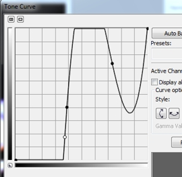
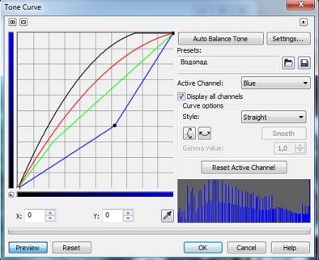
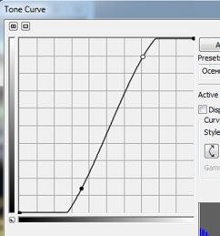

Основы работы с фильтром Tone Curve (Цветовая кривая)
В этом уроке я хочу немного более подробно остановиться на фильтре Tone Curve (Цветовая кривая). Описание диалогового окна, приведенное здесь, действительно дает общее представление об элементах управления окна фильтра, но не о работе с самим фильтром. Я решил в этом уроке исправить это свое маленькое упущение, чтобы начинающим пользователям было проще понять принцип работы этого фильтра. Описывать повторно элементы управления, в уроке я не буду. Конечно, в одном уроке невозможно описать все случаи применения этого фильтра, тем более он редко применяется сам по себе, чаще в сочетании с другими фильтрами.
В качестве примера возьмем изображение показанное на рис. 1.
В данном изображении присутствуют, как очень светлые, так и очень темные участки, а также «промежуточные» участки в центральной части изображения. Выполните команду Adjust > Tone curve (Настройка > Цветовая кривая). Появится диалоговое окно фильтра Tone Curve (Цветовая кривая) (рис. 2).
По определению, наклон кривой – это контраст. Давайте посмотрим, как это работает на примере нашего изображения. Нижняя левая точка кривой соответствует черному или проще говоря самой темной точке изображения. Изменим наклон кривой, перетащив эту точку вертикально вверх (рис. 3).
Получившийся результат показан на рис. 4.
Давайте теперь разберемся, что же произошло… Во-первых, мы изменили наклон кривой, тем самым изменив контраст. Т. к. наклон стал меньше, контрастность изображения уменьшилась. Во-вторых, мы переместили «черную» точку вверх. Шкалы градаций яркости вдоль осей показывают значения яркостей. Яркость возрастает снизу вверх и слева направо. Т. к. мы переместили «черную» точку вверх, в область большей яркости, то изображение стало светлее.
Теперь сделаем аналогичное «телодвижение», т. е. изменим наклон кривой, но переместив вниз «белую» точку кривой, расположенную в верхнем правом углу и соответствующую белому (т. е. самой светлой точке изображения). Получившаяся кривая показана на рис. 5.
Полученный результат показан на рис. 6.
Сравнивая рис. 3 и рис. 5, можно увидеть, что наклон кривой одинаков. Однако во втором случае, мы, перетащили «белую» точку вниз, тем самым уменьшили яркость изображения.
Теперь становится более понятным принцип работы этого фильтра. Правда мы пока ограничились только изменением наклона кривой.
Давайте теперь немного поговорим о работе, собственно с самой кривой, не касаясь пока темы коррекции изображений. Работа с кривой требует некоторого навыка. Например, если установить на кривой три точки и «резко» потянуть левую точку на кривой вправо, то может получиться результат, как на рис. 7.

А само изображение исказится, как на рис. 8.
Врядли вас вдохновит такой результат.
Те, кто вообще еще не работал с этим фильтром, думаю легко догадаются, что добавление дополнительных точек делается щелчком мыши в нужном месте на кривой, а удаление лишних точек – нажатием клавиши Delete.
Давайте продолжим изучение этого фильтра, для чего в качестве эксперимента задействуем сразу несколько элементов управления диалогового окна. На рис. 9 представлено изображение водопада.
Попробуем несколько осветлить изображение и убрать излишний синий отлив. В диалоговом окне фильтра установите флажок Display all channels (Показывать все каналы), чтобы мы видели одновременно кривые для всех каналов, а в области Curve options (Параметры кривой), в списке Style (Стиль) выберем режим создания кривой – Straight (Прямая). В раскрывающемся списке Active Channel (Активный канал), выберем сначала Синий канал – Blue. Немного уменьшим контрастность и яркость этого канала (рис. 10).

Повторяя аналогичные действия увеличим яркость зеленого канала с той разницей, что наоборот, добавим немного яркости в тенях. Для красного канала, выберем режим Curve (Кривая) и увеличим яркость. То же самое, что и для красного канала, повторим для составного канала RGB. Результат показан на рис. 11. Если вас не устраивает результат подбора формы кривой и вы хотите начать с начала, можно нажать кнопку Reset Active Channel (Восстановить активный канал), что приведет к восстановлению формы кривой для активного в данный момент канала.
Здесь может показаться не до конца понятным выбор форм кривых. Дело в том, что когда вы начинаете менять форму кривой, это как правило влечет за собой изменения во всем изображении и эти изменения тем сильней, чем больше вы изменяете форму кривой. В процессе изменения формы кривой, вы видите, какие происходят изменения в изображении и уже по ходу корректировки подбираете форму кривых для остальных каналов.
Из предыдущего примера понятен принцип работы с кривыми и к чему ведет изменение формы кривой, это самое важное. Все что вам нужно сделать дальше – определиться, какие изменения в изображении вы хотите сделать. Чаще всего, можно обойтись одной кривой составного канала RGB.
Чтобы было еще понятней, что я сейчас имею ввиду, рассмотрим еще один пример. Я его распишу буквально пошагово. На рис. 12 показан осенний пейзаж.
Наша задача – сделать изображение более выразительным. Т. к. в этом изображении никаких видимых изъянов нет, то мы просто увеличим общий контраст изображения. Собственно говоря, что для этого нужно? Немного добавить и уменьшить яркости, т. е. увеличить диапазоны ярких и темных тонов, и увеличить контраст в средних тонах. Как же это сделать с помощью фильтра Tone Curve (Цветовая кривая)? Для этого существует классическая форма кривой – S-образная. Давайте так и сделаем. Сначала в верхней части кривой установим точку и переместим ее немного влево (рис. 13).
Результат показан на рис. 14.
Сравните его с рисунком 12. Изображение посветлело. Почему? Да потому, что мы немного сместили правую часть кривой вверх и влево. Смещение вверх – увеличило яркость, а влево – растянуло диапазон светов и чуточку уменьшило в светах контрастность, т. к. маленький участок кривой изменил наклон. Теперь аналогичное действие делаем в нижней левой части кривой. Сместим ее немного вправо (рис. 15).
Результат показан на рис. 16.
Изображение стало более насыщенным и контрастным. Не трудно догадаться, что в результате нашего действия, средняя часть кривой изменила свой наклон и ее центральная часть стала более крутой, что и привело к увеличению контраста в средних тонах изображения. Если бы мы увеличили крутизну кривой, то изображение стало бы чересчур контрастным (рис. 17 и 18).

На этом я пожалуй этот урок закончу. Конечно, тут рассмотрена лишь малая часть работы с фильтром, но именно с подобных действий и можно начать осваивать этот фильтр. Надеюсь, что данные примеры помогут начинающим пользователям быстрее и легче разобраться с работой этого фильтра.
")
")
")
Спасибо!
Отличный урок!
ну прям кореломаргулис :) молодец
только в примере надо было бы наоборот проблемную фотку использовать.